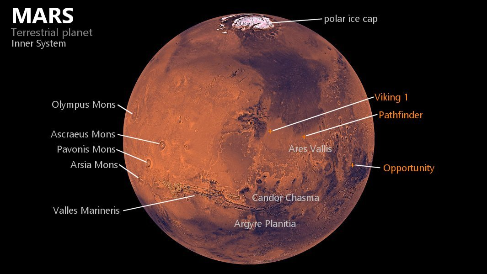

Physical Characteristics
Mars is approximately half the diameter of Earth, with a surface area only slightly less than the total area of Earth's dry land. Mars is less dense than Earth, having about 15% of Earth's volume and 11% of Earth's mass, resulting in about 38% of Earth's surface gravity. Mars is the only presently known example of a desert planet, a rocky planet with a surface akin to that of Earth's deserts. The red-orange appearance of the Martian surface is caused by rust. It can look like butterscotch; other common surface colors include golden, brown, tan, and greenish, depending on the minerals present.
Internal structure
Like Earth, Mars is differentiated into a dense metallic core overlaid by less dense rocky layers. The outermost layer is the crust, which is on average about 42–56 kilometres (26–35 mi) thick, with a minimum thickness of 6 kilometres (3.7 mi) in Isidis Planitia, and a maximum thickness of 117 kilometres (73 mi) in the southern Tharsis plateau. For comparison, Earth's crust averages 27.3 ± 4.8 km in thickness. The most abundant elements in the Martian crust are silicon, oxygen, iron, magnesium, aluminium, calcium, and potassium. Mars is confirmed to be seismically active; in 2019 it was reported that InSight had detected and recorded over 450 marsquakes and related events.
Beneath the crust is a silicate mantle responsible for many of the tectonic and volcanic features on the planet's surface. The upper Martian mantle is a low-velocity zone, where the velocity of seismic waves is lower than surrounding depth intervals. The mantle appears to be rigid down to the depth of about 250 km, giving Mars a very thick lithosphere compared to Earth. Below this the mantle gradually becomes more ductile, and the seismic wave velocity starts to grow again. The Martian mantle does not appear to have a thermally insulating layer analogous to Earth's lower mantle; instead, below 1050 km in depth, it becomes mineralogically similar to Earth's transition zone. At the bottom of the mantle lies a basal liquid silicate layer approximately 150–180 km thick.
Mars's iron and nickel core is completely molten, with no solid inner core. It is around half of Mars's radius, approximately 1650–1675 km, and is enriched in light elements such as sulfur, oxygen, carbon, and hydrogen.
Surface geology
Mars is a terrestrial planet with a surface that consists of minerals containing silicon and oxygen, metals, and other elements that typically make up rock. The Martian surface is primarily composed of tholeiitic basalt, although parts are more silica-rich than typical basalt and may be similar to andesitic rocks on Earth, or silica glass. Regions of low albedo suggest concentrations of plagioclase feldspar, with northern low albedo regions displaying higher than normal concentrations of sheet silicates and high-silicon glass. Parts of the southern highlands include detectable amounts of high-calcium pyroxenes. Localized concentrations of hematite and olivine have been found. Much of the surface is deeply covered by finely grained iron(III) oxide dust.
Although Mars has no evidence of a structured global magnetic field, observations show that parts of the planet's crust have been magnetized, suggesting that alternating polarity reversals of its dipole field have occurred in the past. This paleomagnetism of magnetically susceptible minerals is similar to the alternating bands found on Earth's ocean floors. One hypothesis, published in 1999 and re-examined in October 2005 (with the help of the Mars Global Surveyor), is that these bands suggest plate tectonic activity on Mars four billion years ago, before the planetary dynamo ceased to function and the planet's magnetic field faded.
The Phoenix lander returned data showing Martian soil to be slightly alkaline and containing elements such as magnesium, sodium, potassium and chlorine. These nutrients are found in soils on Earth. They are necessary for growth of plants. Experiments performed by the lander showed that the Martian soil has a basic pH of 7.7, and contains 0.6% perchlorate by weight, concentrations that are toxic to humans.
Streaks are common across Mars and new ones appear frequently on steep slopes of craters, troughs, and valleys. The streaks are dark at first and get lighter with age. The streaks can start in a tiny area, then spread out for hundreds of metres. They have been seen to follow the edges of boulders and other obstacles in their path. The commonly accepted hypotheses include that they are dark underlying layers of soil revealed after avalanches of bright dust or dust devils. Several other explanations have been put forward, including those that involve water or even the growth of organisms.
Environmental radiation levels on the surface are on average 0.64 millisieverts of radiation per day, and significantly less than the radiation of 1.84 millisieverts per day or 22 millirads per day during the flight to and from Mars. For comparison the radiation levels in low Earth orbit, where Earth's space stations orbit, are around 0.5 millisieverts of radiation per day. Hellas Planitia has the lowest surface radiation at about 0.342 millisieverts per day, featuring lava tubes southwest of Hadriacus Mons with potentially levels as low as 0.064 millisieverts per day, comparable to radiation levels during flights on Earth.
